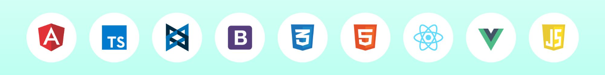

Вступление
В 2025 году веб-технологии достигли беспрецедентного уровня производительности за счет повсеместного внедрения протокола HTTP/3 и форматов нового поколения.
Браузерные движки становятся всё более оптимизированными, стирая границы между нативными приложениями и веб-страницами в облаке.
Сегодня создание сайта — это не просто написание кода, а проектирование сложной экосистемы, ориентированной на мгновенный отклик и абсолютную доступность.
Основные этапы веб-разработки
-
Планирование и анализ:
Определение целей проекта, целевой аудитории и функциональных требований.
-
Проектирование (UX/UI):
Создание прототипов, информационной архитектуры и визуального дизайна интерфейса.
-
Верстка (Frontend):
Преобразование макетов в код с использованием HTML5, CSS3 и JavaScript.
-
Программирование (Backend):
Разработка серверной логики, работа с базами данных и API.
-
Тестирование:
Проверка корректности работы кода, кроссбраузерности и адаптивности.
-
Развертывание (Deployment):
Перенос сайта на хостинг и настройка доменного имени.
-
Поддержка и оптимизация:
Мониторинг ошибок, обновление контента и SEO-продвижение.
Технологии front-end разработки

Таблица браузеров и движков
| Браузерный движок |
Основные разработчики |
Популярные браузеры |
| Blink |
Google |
Google Chrome |
| Microsoft |
Microsoft Edge |
| Opera Software |
Opera |
| Brave Software |
Brave Browser |
| Gecko |
Mozilla Foundation |
Mozilla Firefox |
| The Tor Project / LibreWolf Team |
Tor Browser, LibreWolf |
| WebKit |
Apple Inc. |
Safari (macOS, iOS, iPadOS) |
| Goanna (форк Gecko) |
Moonchild Productions |
Pale Moon |
| Данные актуальны на декабрь 2025 года. |
Ключевые изменения в 2025 году:
-
Blink: Укрепил свои позиции как самый массовый движок. На нем работают не только Chrome и Edge, но и специализированные ИИ-браузеры, а также российские решения (Яндекс Браузер).
-
Gecko: Остается единственной крупной независимой альтернативой движку Google, ориентированной на приватность и открытый код.
-
WebKit: По-прежнему является единственным разрешенным движком для всех браузеров на платформе iOS/iPadOS (включая мобильные версии Chrome и Firefox) в силу политик Apple.